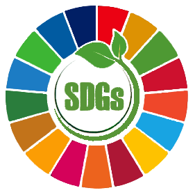

2024-2026
永續影響力報告書
Our Members' Impact, Together
Rotary Club of Taipei Sustainable Impact
Rotary International District 3481
This annual report records the Club's service actions, Member stories, partnerships, and exploration of impact during the 2024-2026 year. It is not only a review of results, but also a phased co-creation record that allows service to be seen, learned from, and continued.
Founded in 2024 in Rotary International District 3481, the Rotary Club of Taipei Sustainable Impact (the Club) is a newly chartered Rotary club whose core mission is to create sustainable impact. Each Member follows global ESG trends and connects them to the development goals of their own industry, hoping to put this into practice in their profession, Club affairs, service, and daily life, accumulating enduring impact for the community, society, and the world.
We choose to approach this annual report with a degree of humility. This is a sustainability impact report, but it does not claim to follow corporate ESG standards or any specific social impact assessment framework. It is a faithful record of the Club's Members during the 2024-2026 year, throughout their participation in Club affairs and the execution of service projects.
The Club is not a corporate organization, nor is it an ESG report centered on the disclosure of operating performance. At the same time, it is not entirely equivalent to a social impact report prepared according to a specific assessment method. For the Club, this report presents how Members continually respond to the needs of the community, society, and the environment through professional expertise, Rotary service, and partner collaboration, and organize the results of service, the learning process, and the trajectory of impact into a record that can be seen, learned from, and continued.
This report is based on Rotary's Five Avenues of Service, combined with the SDGs, social impact, stakeholder perspectives, and impact-management thinking, to build an action-disclosure and learning document. It is also a co-creation record of the public value accumulated by the Club in its founding stage in response to the spirit of Service Above Self and Doing Good in the World.
What we care about is how Members' professional expertise responds to the needs of the community, society, and the environment, and how that response accumulates and becomes visible over time. This section presents, in order, actual cases, the disclosure framework, and the assessment methodology: first see what happened on the ground, then see how the Club classifies and measures it.
A single day of waste-sorting results at the Xingang Lunzi Refreshment Station, with about 2,800 participants, 194.22 kg recycled, and recyclables accounting for 63.7%. This shows what the Club's formal classification looks like when it lands on the ground.
The classification skeleton formed at the March 2026 consensus camp, comprising 5 main outcome chains, 10 material issues, 8 categories of stakeholders, and 16 tracking indicators. This is the foundation of the Club's external disclosure.
Drawing on the 5 stages of the Lxuetang Companionship Card, we observe the roles and growth trajectories of Members within the Club's system. Look back once a year, and directions to go deeper next year naturally emerge.
This year there are 7 service projects in total, spanning multiple issues from education and community to health and the environment. Click any service category below to filter the corresponding projects and see the Club's overall practice from the perspective of Rotary's Five Avenues of Service.
This year there are 7 service projects in total, jointly proposed and driven by Members and Rotary partners. Each card indicates the Rotary Five Avenues of Service category and corresponding SDG indicators.
Proposer · CP Lin (CP Impact)
Proposer · Vicky Lee (Lxuetang Studio)
Proposer · Village Head Xia Wanlang (Wangxi Village)
Proposer · James Gao
Proposer · Dr. Eric Cheng (Inclusive Satellite Club)
Proposer · Vincent Chen
Proposer · Lisa Lin (Sustainable Baixing)
For the Club, the report is not only a review of results,
but also a promise to Members, to the community, and to the world.
We hope this report can let service be seen,
so that Members' professional expertise and dedication can be understood by the wider world.
It can let service be learned from, leaving behind a trajectory
of the experience, methods, and results of each action that can be passed on.
It can let service be continued, so that impact does not stop at this year,
but can still be read, cited, and carried forward ten years from now.
Using Rotary's Five Avenues of Service as the framework,
it records the trajectory of Members advancing social service through their professions.
We hope this report is rooted in the Rotary spirit,
while also giving voice within the larger conversation on sustainability.
The Club makes its process of organization public, hoping this framework can serve as a reference for other Rotary clubs, chambers of commerce, and profession-based communities when they promote service disclosure. May more organizations that begin from a profession be able to organize their members' impact more clearly and have it seen further.